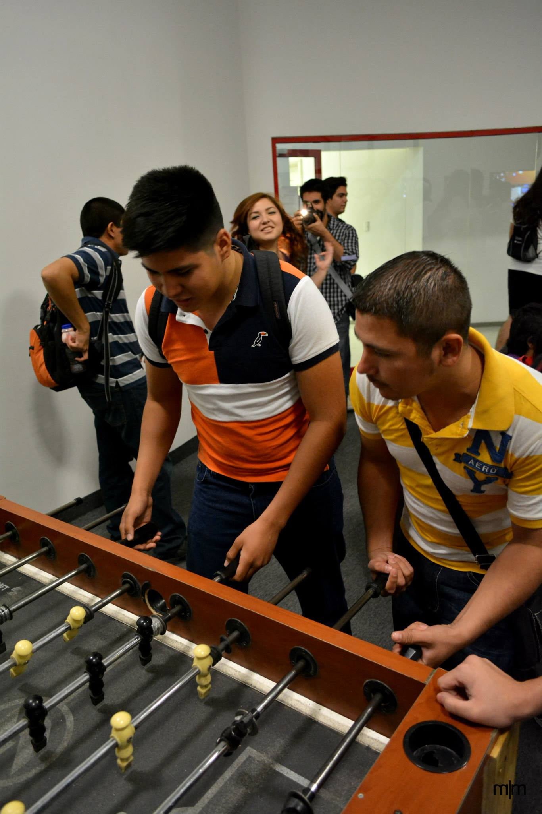
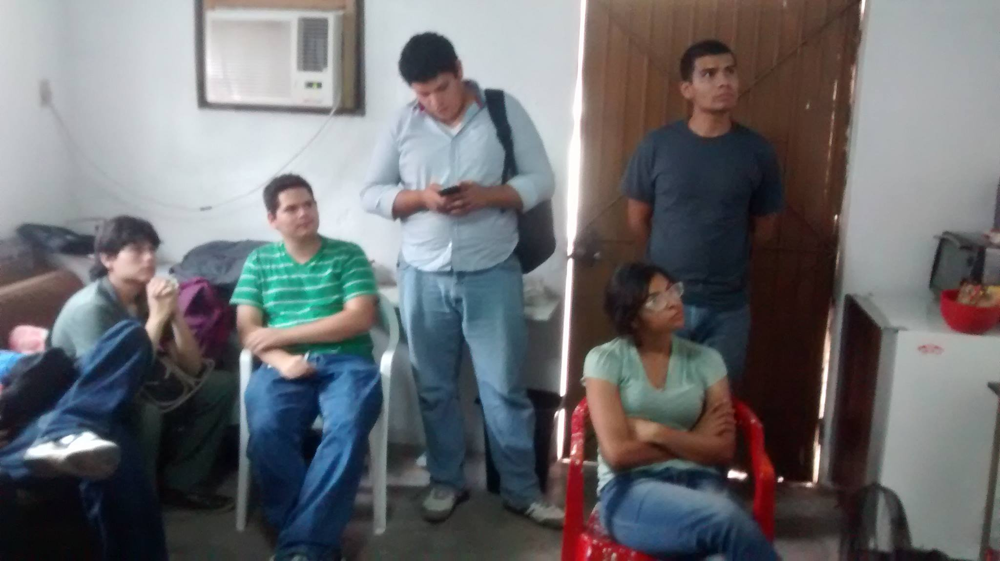
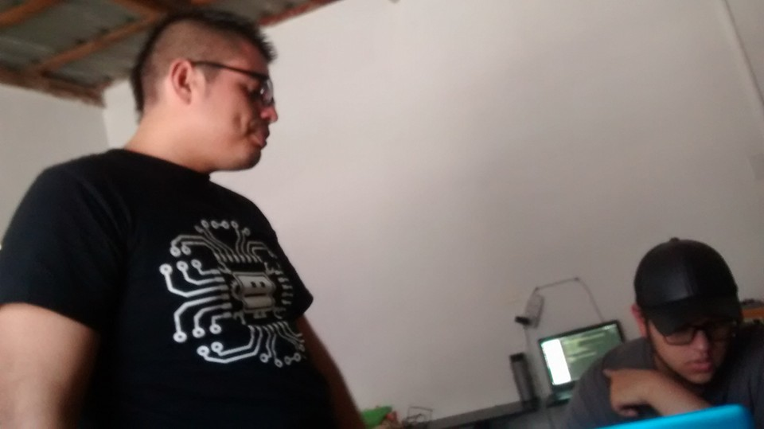
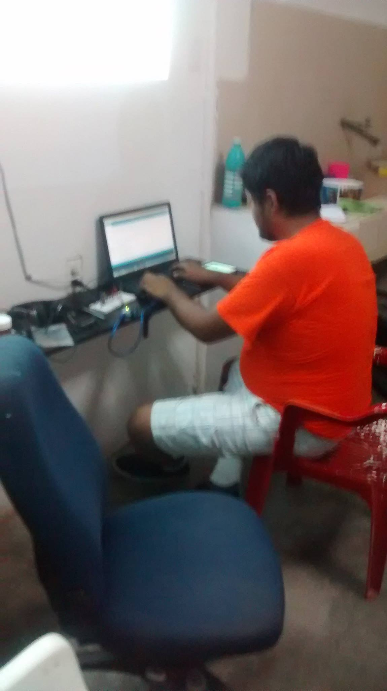

BIENVENIDOS
Esta página se creo para tener un canal de comunicación entre los Makers de Guaymas y de todo el estado en general. Aquí se debe fomentar la innovación, la solidaridad y el trabajo en equipo. El RESPETO a las ideas, creencias, motivaciones y razones personas debe ser lo primordial, así cómo también la mente abierta al debate y a la crítia constructiva.
Makers Guaymas
Los Makers necesitamos comida
Donanos un arduino o que se yo
La comunidad MakerGuaymas esta llena de:

Diversión

Emoción

Conocimiento
